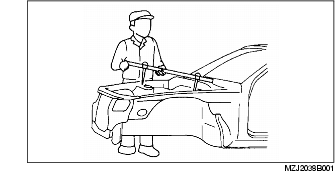
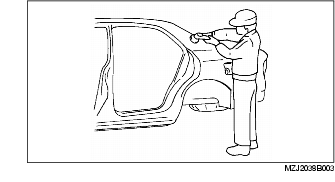

Efficient removal of body panels
Body Measurements
• Before removal or rough-cutting, first measure the body at and around the damaged area against the standard reference dimension specifications. If there is deformation, use frame repair equipment to make a rough correction.

Prevention of Body Deformation
• Use a clamp or a jack for removal and reinforce at and around the rough-cutting location to prevent deforming of the body.

Selection of Cut-and-join Locations
• For parts where complete replacement is not feasible, careful cutting and joining operations should be followed. If the location to be cut is a flat area where there is no reinforcement, the selected cutting location should be where the welding distortion will be minimal.

Removal of Associated Parts
• Protect moldings, garnishes, and ornaments with tape when removing associated parts.
Rough Cutting of Damaged Panel
• Verify that there are no parts (such as pipes, hoses, and wiring harness) nearby or on the opposite side of a panel which could be damaged by heat.
• For cut-and-join areas, allow for an overlap of 30-50 mm {1.18-1.97 in} and then rough-cut the damaged panel.